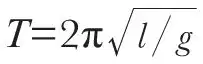

英文
英文刘易斯·理查森
编者按
新发现的量子测不准原理引发了哲学上的大讨论，有些人甚至用它来解释人类的本性以及个人行为的不可预知性。在这篇文章中，刘易斯·弗赖伊·理查森嘲讽了后者的观点。他认为没有必要用科学来预知人的行为。对于一个钟摆的运动情况，科学是可以准确预测的，但前提是在没有人干扰的情况下。月球等大型天体的动力学也可以通过数学方法精确预测，这也是因为没有人能干涉它运动的缘故。但是当论及人类的行为本身时，我们无法保证一个人不对自己的意识施加影响。 英文
为了说明像个人选择自由这样熟悉的事也有必要求助于学究式的海森堡测不准原理吗？这个问题是我在阅读阿瑟·爱丁顿爵士于2月13日发表在《自然》杂志上的演说词时联想到的。对于任意一个在实验室里就可以证实的物理定律，比如一个单摆的周期，

，如果当一个学生观察单摆的时候，另一个学生撞了一下这个摆，则观测结果可能就会与公式不符。所以可以这么说：大家普遍接受的物理定律只有在没有人干扰实验设备的情况下才能被证实。我们无法干扰月球，因为它的质量很大，而且离我们又很远：这就是为什么我们基本上可以预测月球运动的一部分原因；称“基本上”是因为确实存在极小的海森堡不确定性。但是再大的质量或再远的距离也不能阻止约翰·多伊考虑是否要从理查德·罗那里买一幢房子。 英文
（沈乃澂 翻译；李淼 审稿）